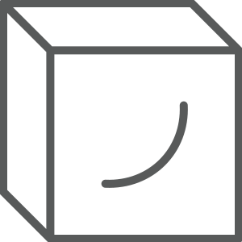
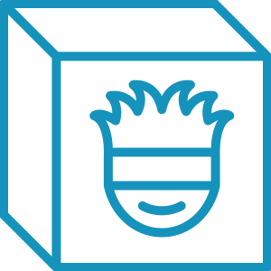

Information
Changing Angles
To change the angle of the Prison Realm (cube), use the right or left arrows to cycle through the angles or click on any of the boxes. The selected angle will have a highlighted box.
About Stages & Transformations
There are three states: Empty (red), Sealed (gray), and Gojo (blue).
-
Empty State (default): The default state. Rotating the Prison Realm is enabled. This can be toggled to reset the angle or the cube's states at any time. The Prison Realm, background color, and the irises of the eyes are red.
-

Sealed State: The second state. This is the state that follows the Sealing Transformation. The eyes on the Prison Realm will be closed. Additionally, the Prison Realm and the background color are gray.
-

Gojo State: The final state. If the Prison Realm is Empty, then an alternate version of the Sealing Transformation will play where a stupid Gojo plush flies into the opened Prison Realm. After about fifteen seconds of it being in the Sealed State, the Prison Realm will (hopefully correctly) fall to the bottom of the page, open its now-blue eyes, and change the background color to blue. The eyes will frantically look around for a couple seconds until it resumes its normal blinking animation. You will be unable to change the angles at this state.
Sealing Transformation: The Prison Realm changes angles to temporarily appear 2D, then will perform an animation where the Prison Realm splits into fours to reveal a creepy, large eye. After a few seconds, the Prison Realm will close, turn gray, and reveal its now-closed eyes. You will also be unable to change the angles during this animation.
Why did you make this?
- The idea popped into my mind randomly one day and I immediately decided that I needed to try to pull this off.
- I also might be insane.
How did you make this?
- I'm planning on writing about that soon— there were a lot of steps involved. In the meantime, if you're really curious, feel free to contact me.
What software did you use?
- This site was made with HTML, a lot of CSS, and JavaScript.
- I will be fully transparent here— I used ChatGTP for most of the JavaScript because I am weak.
- The animation for the blinking eyes, and the animation for the eyes looking around was made in After Effects.
- All icons were made in Illustrator.
How long did this take?
- About two weeks.
Why did you use that image of Squishmallow Gojo?
- Funny.
I think you should do [suggestion]. Do you think you'll do that?
- Gojo State
- The animation of the eyes looking around may be out of sync and/or start at the wrong time.
- During the Gojo State, the cube may get cut off it goes too far down the bottom of the screen.
- Mobile
- Eyes may not appear or randomly disappear on the Prison Realm. This can be resolved by refreshing the page.
- There's a possibility that the page may get stuck if you scroll down or zoom in on the page.
- The animation of the eyes looking around may lag.
- On newer iOS devices (at least iPhone models newer than 13): The prison realm may clip through the information menu. This is due to some weird bug on Apple's end.
- There's a possibility for animations to become out of sync.
- Animations flickering.
- Long load times.
- If you rapidly toggle between the "change states" buttons, you will probably break the animation.
- Add more alternate descriptions and just make it more accessible overall.
- Create a backlink to my homepage.
- Create touch controls for the cube for mobile devices.
- Add more to the FAQ.
- Add a cooldown for toggling the "change state" buttons so the animations cannot get broken.
- (The probability of doing this is low because of the sheer amount of involvement) create a "toybox" mode where users can enter keywords and trigger different animations and whatnot.
- Beta 1.2.0. (April 12, 2025)
- Gojo state
- The eyes shfiting around animation should definitely be consistantly synced together.
- Fixed animation so eyes on the other half of the cube face was still apparent in the animation.
- Added a drop shadow to the UI to make it more legible.
- Mobile
- On mobile devices, the screen should not get stuck if user accidentally scrolls down or zooms in on webpage.
- Hopefully, the cube will not clip through the information menu, but my confidence in this is low.
- Beta 1.1.0. (March 29, 2025)
- Added collapse menus to information (this page).
- Listed more bugs.
Beta 1.2.0.